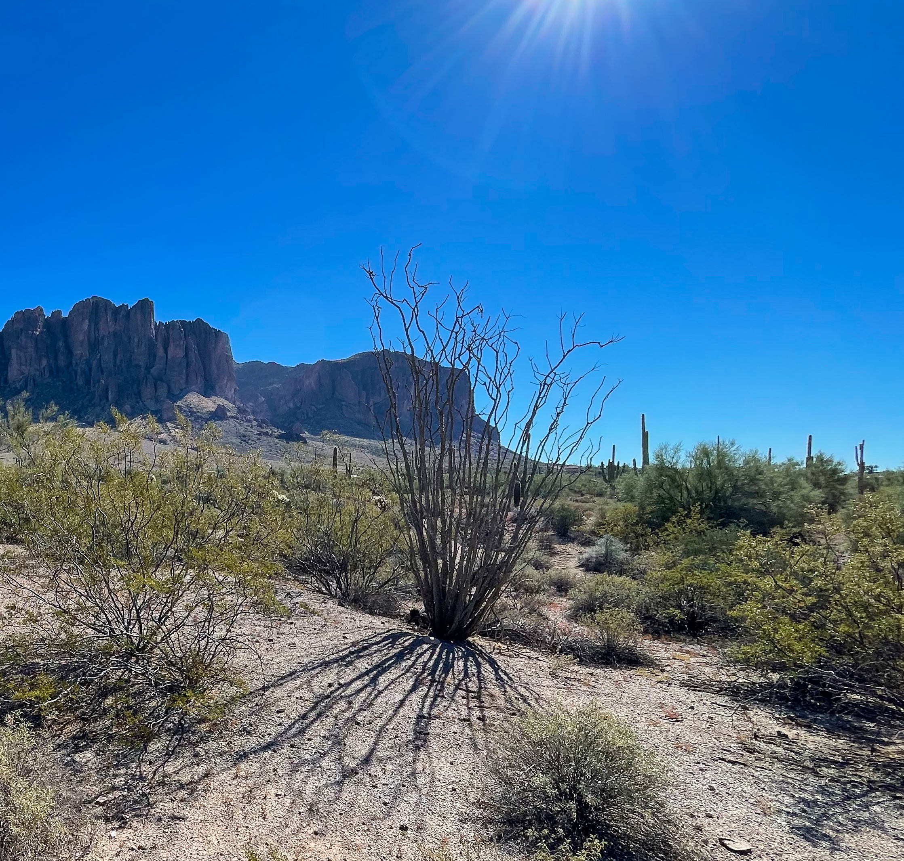

Habitat range

Ocotillos are common throughout most of the Sonoran and Chihuahuan deserts of the U.S. and Mexico. They are typically found in desert grasslands, mesas, rocky slopes, or in and around washes. They prefer coarse, rocky soil that has good drainage. Depending on rainfall, they usually bloom in the spring between march and June. They are most often pollinated by hummingbirds and bees.
Plant Identification


Plant Uses
Thanks to their unique appearance, Ocotillo plants are easy to identify. They consist of multiple spiny, pole shaped stems that grow upward from a single clustered based, with no other branches other than the ones growing up from the base. They appear lifeless for much of the year in most of their habitat areas. They only grow leaves after rains that then turn yellow and fall off after a few weeks without rain.